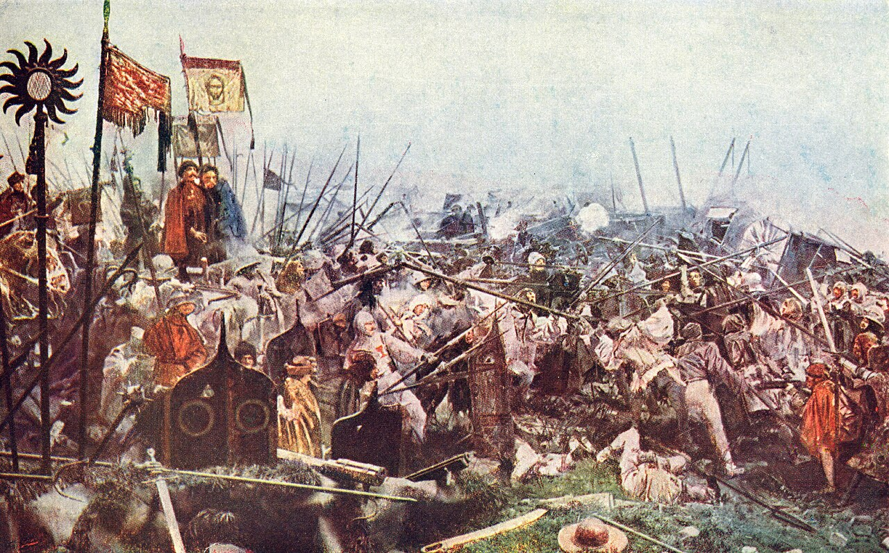
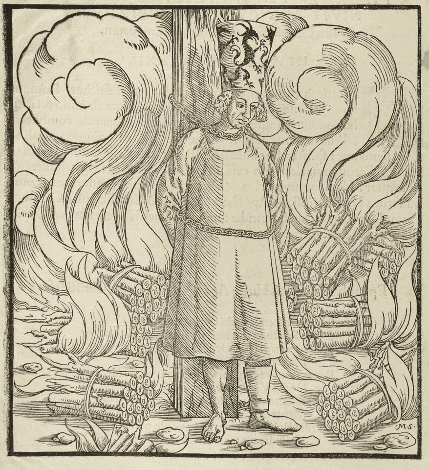
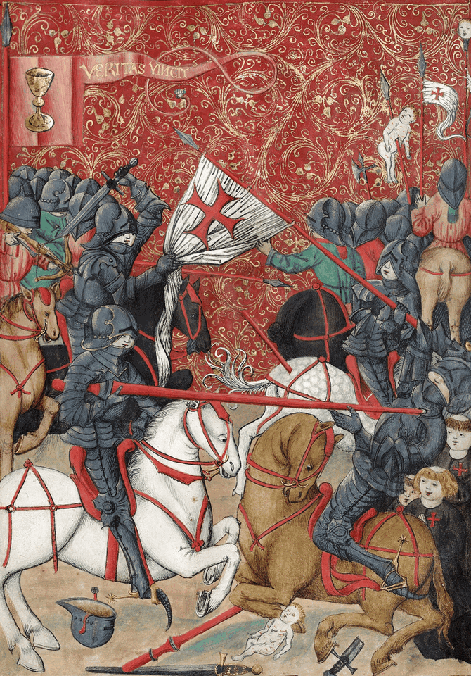
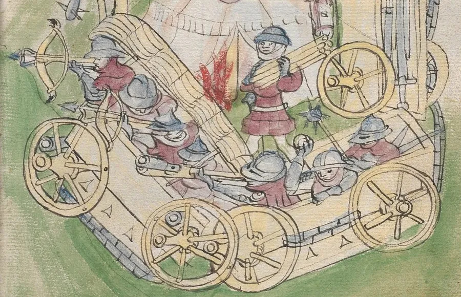

信仰衝突、軍事變革與波希米亞國家認同：胡斯戰爭的歷史脈絡、演進特徵與深遠影響研究報告

波希米亞王國在十三世紀確立其政治地位，並在十四世紀神聖羅馬帝國皇帝查理四世統屬時期達到繁榮與地緣影響力的頂峰[1, 17]。然而，在其繼任者瓦茨拉夫四世統治期間，波希米亞內部卻因嚴重的結構性社會矛盾而陷入政治與經濟的全面動盪[1, 5]。1380年肆虐歐洲的第二次鼠疫大流行（Prague Plague of 1380）奪去了該地區將近十分之一至十五分之一的人口，重創了基層經濟，並加劇了各階級之間的對立[1, 6]。當時，羅馬天主教會神職人員掌控了波希米亞境內高達三成至半數的耕地，這激起了捷克本土世俗中小貴族的強烈嫉妒，也引發了飽受重稅與地租壓迫之平民階層的極度憤慨[3, 8]。與此同時，西方教會正面臨嚴重的「西方教會大分裂」（Western Schism），羅馬、阿維尼翁與比薩三系教皇相互攻訐絕罰，教廷道德權威腐化墮落，神職人員聚斂私財、販賣贖罪券的行徑，更使天主教會的屬靈合法性在波希米亞社會中降至冰點[1, 9]。在這種深刻的信仰、經濟與民族危機中，捷克本土學者揚·胡斯（Jan Hus）的思想學說在波希米亞迅速傳播，為一場波瀾壯闊的武裝對抗與宗教革命埋下了火種[9, 18]。
一、 胡斯戰爭的歷史背景與導火線

揚·胡斯約於1370年前後出生在波希米亞南部胡西內茨（Husinec）的一個貧寒農民家庭，憑藉自身才智考入布拉格大學，並於1400年正式晉鐸為神父[9, 18]。他隨後出任布拉格大學校長，並受聘為波希米亞王后索菲亞（Sophia of Bavaria）的告解神父，在學術殿堂與宮廷政治中皆享有一席之地[4, 9]。在神學思想上，胡斯深受英國早期宗教改革先驅約翰·威克里夫（John Wycliffe）論著的啟發，開始對羅馬教廷的至高權威、教階制度以及聖人崇拜提出根本性的系統批判[1, 4]。他極力反對教會積聚世俗財富；1412年，西方教會大分裂期間的比薩系對立教皇約翰二十三世（Antipope John XXIII，即巴爾達薩雷·科薩）為籌措討伐其政敵拿坡里國王拉迪斯勞（Ladislaus of Naples）的十字軍軍費，下令在波希米亞境內大肆售賣贖罪券[1, 9]。胡斯對此深惡痛絕，在神學論著《論贖罪券》（Quaestio de indulgentiis）中公開譴責教廷假借上帝赦罪之名挑動基督徒內戰自相殘殺並聚斂私財，引發布拉格市民的熱烈響應與學生抗議[9, 10]。
胡斯的神學體系建立在「聖經唯獨」與屬靈真理的原則之上[4, 9]。他堅信唯有聖經才是信仰與教會生活的最高準則，世俗平民與神職人員一樣擁有直接研讀聖經、理解上帝真道的權利[4, 18]。為了踐行這一理念，胡斯在布拉格的伯利恆禮拜堂堅持以捷克母語而非傳統拉丁語進行宣教，每次皆能吸引超過三千名各階層民眾前來聆聽，極大地推動了波希米亞民族意識與文化主體性的覺醒[8, 9]。為了使平民能夠精確理解教義，胡斯推動了對既有捷克語聖經的系統性學術校訂（Husova revize），並撰寫了革命性的拉丁文語法論文《波希米亞正字法》（De orthographia bohemica），首創引進附加符號（如點音符 punctus rotundus，後演進為抑揚符 háček，以及長音符 virgula）規範捷克語拼音，取代中古繁複的多字母拼讀組合，為現代捷克語書寫系統奠定了奠基性的學術貢獻[1, 9]。胡斯的言行最初獲得了國王瓦茨拉夫四世的政治庇護，但當他反對贖罪券的激進立場損害了教廷與王室分食贖罪券提成的財政利益時，王室隨即收回了保護，使其直接暴露於教廷的宗教裁判審判之下[4, 9]。
1414年，德意志國王（及後來的神聖羅馬帝國皇帝）西吉斯蒙德（Sigismund of Luxembourg）為了徹底終結長達近四十年的西方教會大分裂（Causa unionis）、肅清蔓延歐陸的異端思想（Causa fidei）並整飭教會體制腐敗（Causa reformationis），主導召開了全歐矚目的康斯坦茨大公會議（Council of Constance）[1, 21]。胡斯在獲得西吉斯蒙德親自簽發並保證其往返安全的帝國「安全通行證」（Safe-conduct）後，毅然啟程前往大公會議申訴其神學主張[4, 10]。然而，大公會議的教長們隨即推翻了國王的安全承諾，援引中世紀教會法慣例宣稱「對異端做出的任何世俗保證均不具法律約束力」，西吉斯蒙德最終選擇向教廷保守勢力妥協，默許了對胡斯的逮捕與長期單獨囚禁[4, 23]。胡斯在審訊中拒絕撤回其神學著作的核心論點，於1415年7月6日被大公會議正式宣判為頑固不化的異端首領，褫奪聖職並押送至康斯坦茨城外的火刑柱上處死[4, 9]。在受刑前，教士們強行為他戴上一頂畫有三個猙獰惡魔、並寫有拉丁文「異端首領」（Heresiarcha）字樣的高角紙冠（paper mitre），以此公然羞辱其信仰立場與神學主張[4, 18]。胡斯與其隨後於1416年殉道的忠實同道布拉格的傑羅姆（Jerome of Prague）的遺骨殘骸皆被研磨成灰燼撒入萊茵河，以防止追隨者將其受難地轉化為朝聖聖地[1, 4]。
這場背信棄義的火刑，徹底引爆了波希米亞社會積壓已久的民族尊嚴與宗教怒火[1, 5]。1415年9月2日，捷克境內的452位世俗貴族與騎士聯合向大公會議遞交了加蓋印璽的《波希米亞聯合抗議書》（Protestatio Bohemorum），嚴厲譴責對胡斯的枉殺[1, 3]。波希米亞境內的改革派教士與信徒隨即自發推行「兩形聖餐禮」（Utraquism，語源出自拉丁文 sub utraque specie，即「在兩種形式下」）：打破羅馬天主教傳統中僅允許神父獨領聖血、世俗平信徒只領聖體麵包的階級壟斷，主張全體基督徒在聖餐中均有權同時領受餅（基督聖體）與酒（基督寶血）[1, 14]。這一強調信徒屬靈地位平等的聖餐實踐迅速成為胡斯運動最核心的抗爭旗幟，聖杯（Chalice）徽記自此躍然於胡斯武裝的軍旗、車板與盾牌之上[1, 5]。
1419年7月30日，局勢徹底走向武裝暴動。激進派牧師揚·熱利夫斯基（Jan Želivský）在布拉格舉行要求釋放被捕改革派信徒的聖餐遊行，行經新市政廳（Novoměstská radnice）時遭到市政官員投擲石塊挑釁[1, 7]。早已群情激憤的改革派民眾在下級貴族出身的軍事將領揚·傑式卡（Jan Žižka）率領下衝入市政廳議事大廳，將市長揚·波迪溫斯基（Jan Podivínský）、鎮長、法官與數名市議員共七人自二樓窗口拋下；守候在樓下街巷的武裝人群手持長矛與長戟將其接住並當場殘暴刺殺，這便是歐洲近代史上震驚全歐的「第一次布拉格拋窗事件」[1, 22]。病榻上的國王瓦茨拉夫四世在聞訊兩週後因極度驚恐突發中風猝逝，波希米亞王國隨即陷入王權真空、革命烈火與全境內戰之中[1, 5]。
二、 革命綱領與運動派系
第一次布拉格拋窗事件後，面對神聖羅馬帝國的軍事威脅，波希米亞各界改革派代表於1420年5月在布拉格共同議定並於9月正式頒布了統一的鬥爭綱領，即奠定捷克宗教改革基石的《布拉格四條款》（Four Articles of Prague）[1, 2]。
| 條款項目 | 核心神學訴求 | 社會、政治與經濟影響 |
|---|---|---|
| 自由傳道 | 允許並保障所有神職人員在波希米亞境內以捷克母語自由、不受阻礙地宣講上帝聖言[1, 3]。 | 徹底打破羅馬教廷對教義闡釋權與拉丁語宣教的行政壟斷，使福音普及至社會底層階層[3, 8]。 |
| 兩形聖餐 | 依據基督初創聖餐之律，向全體未犯絕罰大罪的信徒施予代表聖體與聖血的麵包與葡萄酒（sub utraque specie）[1, 14]。 | 否定了神職階層在恩典救贖中的神聖特權，確立了信徒在上帝面前的精神平等地位[14, 18]。 |
| 教會安貧 | 剝奪羅馬教會神職人員管理世俗財產、土地莊園與世俗官職的支配權，使其回歸初期教會使徒式的清修生活[2, 3]。 | 沒收天主教修道院在波希米亞境內高達半數的世俗土地，徹底重構了波希米亞的地產分佈與封建經濟格局[1, 8]。 |
| 懲治罪行 | 世俗司法機關應在所有階級中依法公開審判並懲處一切公開的重大罪行（如高利貸、西門買幣、通姦與偽誓）[1, 2]。 | 消除了神職人員享有的中世紀教會司法審判豁免權，推動了世俗法律管轄權的一體化進程[2, 4]。 |
在《布拉格四條款》的共同旗幟之下，胡斯運動內部因社會階級、財產利益與神學激進化（Radicalization）程度的深刻差異，分化為三大核心陣營[1, 5]：
- 聖杯派 / 兩形派（Utraquists / Calixtines，亦稱布拉格溫和派）：主要由布拉格富有市民階層、捷克高層大地主貴族以及布拉格大學的人文學術精英構成[1, 14]。他們的神學訴求相對溫和保守，主要聚焦於爭取兩形聖餐禮儀的合法地位、限制教廷世俗財富以及確保捷克語講道權利；他們在政治上反對推翻現有封建社會階級秩序，始終希望在維持天主教大公教會法理框架的前提下，透過外交談判換取波希米亞地方教會的高度自治[3, 14]。
- 塔博爾派（Taborites，激進平民派）：以1420年春在南波希米亞盧日尼采河畔新建的要塞防禦城鎮「塔博爾」（Tábor）為組織中樞，核心成員包括貧苦農民、城鎮無產手工業者、下層教士與破落騎士[1, 5]。他們在宗教上主張徹底決裂羅馬教階體系，否定煉獄、聖人崇拜與大部分傳統聖禮（僅保留洗禮與聖餐）；在社會與政治層面，塔博爾派深受千禧年主義（Millenarianism）影響，倡導打破封建階級特權、實行早期基督社群式的財產共有制（Communism of goods）與稅賦免除，其堅定狂熱的信仰使其民兵成為抗擊十字軍的核心鐵軍[1, 8]。
- 孤兒派（Orphans / Sirotci，中道激進武裝派）：原為揚·傑式卡於1423年東波希米亞組建的「小塔博爾派」精銳部隊；在傑式卡於1424年秋前線軍旅中病逝後，其將士因痛失精神導師而拒絕選立新的單一總司令，悲痛自稱為「孤兒」[5, 7, 15]。孤兒派在軍事體制與神學立場上居於溫和聖杯派與極端塔博爾派之間，既維繫嚴格的軍事紀律與戰備實力，又在抗擊外侮、捍衛《四條款》的核心立場上與塔博爾派維持著堅固的戰略同盟[1, 7, 15]。
三、 五次十字軍入侵與戰爭進程

面對波希米亞平民對教廷權威的公開挑戰，羅馬教宗馬丁五世（Pope Martin V）於1420年3月1日正式頒布教皇十字軍敕諭《大公教會之職責》（Omnium plasmatoris domini），號召全體天主教君主發起十字軍聖戰討伐波希米亞異端[1, 13]。神聖羅馬帝國候任皇帝西吉斯蒙德以此為法理號召，集結了包括德意志諸侯、匈牙利重騎兵與奧地利僱傭軍在內的數萬大軍，對波希米亞腹地展開了五次大規模戰略圍剿[1, 17]。
五次反胡斯十字軍東征戰史對比
在長達十餘年的殊死抵抗中，波希米亞平民軍隊依託戰術創新，連續粉碎了由歐陸最精銳封建騎士團組成的征討聯軍[5, 11]。
| 戰爭階段 | 十字軍時期與教皇詔令 | 天主教陣營主要指揮官 | 胡斯陣營主要指揮官 | 關鍵戰役、衝突地點與軍事演進 |
|---|---|---|---|---|
| 第一次十字軍 | 1420年3月宣告，6月發動[1, 13] | 西吉斯蒙德、奧地利公爵阿爾布雷希特五世[1, 23] | 揚·傑式卡（Jan Žižka）[5, 7, 19] | 西吉斯蒙德率約三萬大軍進圍布拉格。1420年7月14日爆發維特科夫山戰役（Battle of Vítkov Hill），傑式卡依託狹窄險峻的山脊工事與戰車堡壘以少勝多擊退數千帝國精銳騎兵衝鋒，迫使其解圍[5, 7, 19]。西吉斯蒙德隨後於聖維特主教座堂強行加冕為王；11月1日爆發維謝赫拉德戰役（Battle of Vyšehrad），帝國解圍軍遭伏擊慘敗，城堡投降[1, 5]。 |
| 第二次十字軍 | 1421年8月至1422年1月[1, 2] | 西吉斯蒙德、德意志選帝侯聯軍[1, 23] | 揚·傑式卡（Jan Žižka）[5, 7, 19] | 北路德意志十字軍圍攻扎泰茨（Žatec）未果潰退。南路西吉斯蒙德親率主力長驅直入；傑式卡雖雙目完全失明，仍在庫特納霍拉（Kutná Hora）突圍並在內梅茨基布羅德戰役（Německý Brod, 1422年1月）中利用戰車火炮實施包抄反擊，帝國軍潰渡薩札瓦河時冰面碎裂溺斃無數，後衛遭徹底殲滅[1, 5, 19]。 |
| 第三次十字軍 | 1422年10月至11月[1, 5] | 德意志邊境選帝侯與帝國諸侯聯軍[1, 5] | 揚·傑式卡、西吉斯蒙德·科里布特[1, 7] | 十字軍重兵包圍卡爾什特因城堡（Karlštejn Castle），因無法突破守軍火器防禦且糧秣匱乏，陷入膠著後宣告停戰撤兵[1, 5]。戰後波希米亞與立陶宛大公維陶塔斯（Vytautas）建立同盟，外患暫息；但隨後胡斯派內部爆發階級內訌，傑式卡於馬萊紹夫戰役（Battle of Malešov, 1424年6月）重挫溫和派，同年10月病逝於普日比斯拉夫前線[5, 7]。 |
| 第四次十字軍 | 1427年7月至8月（前有1426年奧西格大捷）[1, 13] | 英格蘭樞機主教亨利·博福特、布蘭登堡選帝侯腓特烈一世[1, 2] | 大普羅科普（Prokop the Great）[1, 20] | 接替指揮的大普羅科普先於1426年6月在奧西格之戰（Battle of Aussig / Ústí nad Labem）重創德意志邁森與薩克森解圍軍[1, 5]。1427年7月，教皇正式組織第四次十字軍進圍斯特日布羅（Stříbro），在塔霍夫戰役（Battle of Tachov, 1427年8月）中遭普羅科普主力反撲擊潰，塔霍夫要塞失守，帝國軍狼狽逃竄[1, 20]。 |
| 第五次十字軍 | 1431年8月[1, 13] | 羅馬教皇特使樞機主教朱利安·塞薩里尼（Giuliano Cesarini）、布蘭登堡藩侯腓特烈一世[1, 2] | 大普羅科普（Prokop the Great）[1, 20] | 天主教陣營組織最後一次全面軍事圍剿。1431年8月14日爆發多馬日利采戰役（Battle of Domažlice），十字軍在前線集結時，遠遠聽聞胡斯聯軍推進時高唱《上帝的戰士》（Ktož jsú boží bojovníci）戰歌並伴隨戰車雷鳴般的車軸滾動聲，全軍陷入集體恐慌不戰自潰，遺棄全部重型攻城炮與輜重[1, 20]。 |
早期關鍵戰役之戰術剖析
胡斯戰爭前期的系列軍事奇蹟，奠基於傑式卡對地理微地形的敏銳洞察與平民武裝野戰陣地的精巧構築[5, 7]。
- 內克米日之戰（Battle of Nekmíř, 1419年12月）：這是世界戰史上有文字確鑿記載的首次戰車堡壘實戰[5, 7]。傑式卡率領的約400名步兵遭遇親天主教領主波胡斯拉夫（Bohuslav of Švamberk）麾下2,000名封建重裝騎士的伏擊截斷。面對五比一的極端兵力劣勢，傑式卡命令7輛輜重戰車迅速圍攏成環狀臨時防禦環形陣，車板外側鋪設防護厚板，令手銃手與弩手在掩護下實施密集精準的交替射擊。早期火器發射時迸發的火光、濃煙與爆響極度驚駭了未經抗震訓練的軍馬，重裝騎士在猛烈密集的射擊下死傷狼藉被迫退走，奠定了戰車陣野戰防禦的可行性基石[5, 11]。
- 蘇多梅日之戰（Battle of Sudoměř, 1420年3月25日）：傑式卡率領約400名攜帶婦孺家眷的塔博爾派平民轉移，途中遭遇皇家騎兵與醫院騎士團共約2,000名精銳騎士的截擊[5, 7]。傑式卡將12輛戰車構築在兩座冬季排水排乾的泥濘魚塘狹窄堤道之上。皇家騎士自恃裝甲堅固，試圖自兩翼乾涸的魚塘底窪地發動迂迴包抄；然而沉重的戰馬與全身板甲迅速陷入了深達數尺的淤泥沼澤之中，動彈不得。胡斯步兵趁勢揮舞著加裝鐵釘與鐵箍的打穀連枷（Flails）及長柄馬鐮殺出車外，將深陷泥淖的重裝騎士鉤落馬下擊殺，此役徹底樹立了傑式卡在波希米亞軍民中的崇高統帥威望[5, 7]。
- 維特科夫山之戰（Battle of Vítkov Hill, 1420年7月14日）：西吉斯蒙德大軍合圍布拉格，企圖攻佔俯瞰城東通道的維特科夫山狹窄山脊，徹底截斷布拉格的補給糧道[1, 5]。傑式卡在山脊頂部預先構築了兩座木質石構防禦堡壘、木柵欄與反騎兵壕溝，僅率26名戰士（內含數名婦女）堅守關鍵節點。當帝國數千前鋒騎士沿陡坡發動仰攻時，因山脊寬度不足數十公尺而完全無法展開騎兵橫列隊形；在胡斯守軍的弩箭、火銃與投石打擊下，衝鋒騎士陣形大亂。值此危急關頭，傑式卡率預備隊自側翼發動突襲，同時布拉格新城的胡斯援軍亦揮舞連枷自後方包抄，十字軍騎兵在極度混亂中發生踐踏，大量騎士墜落陡峭山谷喪命，迫使西吉斯蒙德隨後黯然宣布解除圍城[5, 7]。
攻勢擴張與內部分裂
在接連重創五次十字軍東征後，胡斯運動由戰略防禦轉入全盛的戰略反攻階段[1, 8]。繼任統帥大普羅科普（Prokop the Great）改變了單純本土固守的被動態勢，自1427年起主導展開了被稱為「光榮遠征」（捷克語：spanilé jízdy，亦常譯為「美麗遠征」）的主動出擊戰略[1, 20]。胡斯聯軍兵分多路，主動深入薩克森、巴伐利亞、西里西亞、奧地利、匈牙利北部，甚至一度向北穿透直達波羅的海沿岸的但澤（Danzig）[1, 8]。這種外線攻勢戰略一方面實現了「以戰養戰」，自德意志諸侯領地掠奪維持波希米亞戰時經濟所極度匱乏的糧食、馬匹與金屬物資；另一方面在戰略心理上徹底打破了天主教神權陣營的封鎖壁壘，迫使神聖羅馬帝國諸侯認識到武力征剿的不可能，進而不得不轉向求和外交[1, 13]。
然而，長達十餘年綿延不絕的戰爭動員與外部經濟封鎖，亦使波希米亞本土經濟民生凋敝、土地荒蕪、通貨膨脹嚴重，社會厭戰情緒空前高漲[1, 5]。1431年第五次十字軍潰敗後，波希米亞社會內部階級矛盾再度白熱化：渴望終止戰禍、恢復對外經貿往來的大貴族與布拉格市民（溫和聖杯派），與誓死捍衛《四條款》全部神學細節、拒絕向教廷妥協且高度依賴軍事生存的軍民階層（激進塔博爾派與孤兒派），在和平條款的妥協邊界上爆發了不可調和的生死衝突[1, 14]。此時，正在召開的巴塞爾大公會議（Council of Basel）敏銳地洞悉了胡斯派的階級裂痕，採取分化瓦解策略，向溫和派拋出了承認其兩形聖餐禮儀及沒收教產合法性的誘餌，換取其聯手剿滅激進派的承諾，波希米亞不可避免地墜入了全面自相殘殺的同胞內戰深淵[1, 14]。
四、 軍事變革：戰車堡壘與火器一體化

胡斯戰爭在世界軍事技術史上標誌著步兵戰術的劃時代復興，揚·傑式卡與胡斯將領在西方軍事實踐中首次成功實現了「裝甲工事、步兵編制與火藥武器的野戰一體化整合」[5, 11]。
戰車堡壘（Wagenburg）的技術細節與編組對比
胡斯的戰車堡壘絕非隨機拼湊的臨時輜重堆疊，而是依據精密戰術手冊改裝、具備標準化構件並緊密協同作戰的「模組化機動野戰要塞」[5, 12]。
| 結構與技術維度 | 胡斯戰車堡壘（Wagenburg）配置 | 中世紀傳統騎士封建戰術 |
|---|---|---|
| 車體裝甲與防禦結構 | 四輪農用加固輜重車改裝，外側車廂板加厚並向外傾斜以彈開箭矢；左輪外側懸掛由粗鐵鏈與鉸鏈固定的厚木擋板保護車輪；車底懸掛防爬護板阻止敵兵伏地爬入；側板開鑿步槍與弩箭射孔[5, 11]。 | 仰賴騎士個體昂貴的鍛造鋼製板甲與戰馬防護，在野戰中缺乏集體工程屏障掩護，極度暴露於遠程齊射火力之下[11, 16]。 |
| 車組人員編制協同 | 每輛戰車標準編配約18至20名戰鬥人員：2名專職車伕駕駛兼技工、6名長弩手、2名火銃手、4名打穀連枷近戰兵、4名長柄鉤鐮戟手、2名手持大型帕維斯大盾（Pavise）的掩護防禦兵[5, 7]。 | 貴族騎士攜侍從隨意衝鋒，作戰單元基於封建領主人身依附關係，缺乏標準化連排級戰術分工與步兵多兵種掩護體制[11, 16]。 |
| 火炮火槍技術規格 | 戰車間隙架設輕型榴彈炮（Houfnice，語源來自捷克語 houf「人群」，經德語 Haubitze 演變為現代榴彈炮 howitzer）、手持小型火銃（Píšťala，捷克語原意為「笛子/管子」）以及重型金屬鉤銃（Hákovnice，銃管下方鑄有金屬倒鉤以卡在車板上吸收巨大後座力，為日後鉤銃 hackbut / arquebus 之先祖）[5, 12]。 | 早期火器多為笨重、固定式巨型攻城石炮（Bombards），野戰機動性能極差，發射頻率遲緩，幾無野戰反騎兵殺傷效用[11, 12]。 |
| 陣型機動與展開機制 | 戰車在野戰中行進時排列為雙列或四列縱隊，遇敵時迅速在幾分鐘內以鐵鏈彼此鎖死扣緊，圍成方形、圓形或多角形陣地；車外挖掘反騎兵壕溝，車內空地安全圈安置馬匹、彈藥與反擊預備隊[5, 7]。 | 騎士採用密集橫列或三角形楔形隊列，高度依賴平坦開闊的硬質草地進行正面高速衝擊，一旦遭遇微地形障礙即喪失衝擊動能[11, 16]。 |
語言學考證補充：關於英語手槍「pistol」一詞之語源，學界長期存在雙重假說：一派學者（如 František Šmahel 與諸多軍事技術史家）認為其經由捷克語 píšťala 經德語借詞 Pischkole 與法語 pistole 輾轉演進而來[5, 12]；而以《牛津英語詞典》（OED）為代表的另一派權威語言學家則考證指出，該詞更可能直接溯源於文藝復興時期以精良匕首及小型手持槍械製造聞名的義大利托斯卡納名城皮斯托亞（Pistoia）[12]。
戰術運用：高地依託與多維火力打擊
在戰場實際運用中，傑式卡將防禦反擊戰術發揮至登峰造極之境[5, 7]。胡斯軍隊通常先行搶佔陡峭的山坡或高地背斜坡部署戰車陣地，居高臨下的地勢不僅迅速消耗仰衝敵軍重騎兵與戰馬的體力，更使戰車陣隙縫間平射的輕型榴彈炮獲得了無盲區的殺傷彈道[5, 11]。
作戰展開時，胡斯部隊依序貫徹四重殺傷階段： 1. 遠程火炮阻擊：在敵軍發動衝鋒之初，以部署於車輛接縫處的野戰輕炮實施密集霰彈射擊，打亂其騎兵衝鋒隊形； 2. 中程彈雨壓制：當敵軍逼近至百公尺以內時，戰車掩護板下的弩手與手銃手实施階梯式交替裝填與齊射，以密集金屬彈丸重創未披全甲的戰馬與騎士面罩； 3. 近距接敵絞殺：突破彈雨迫近車旁的少數騎士，因戰車障礙喪失衝擊速度，此時車組連枷手與長鐮手利用長柄武器揮擊其頭盔、鉤割馬繮與板甲關節，將其強行拽落馬下斬殺； 4. 側翼破陣追擊：待敵方攻勢瓦解、全線動搖混亂之際，隱蔽在戰車堡壘內圈深處的胡斯長矛步兵與輕裝騎兵推開防護大盾自兩翼迅猛殺出，對潰退敵軍展開毀滅性的圍殲追擊[5, 7]。
五、 利帕尼戰役與戰爭的政治終局
1434年春，在巴塞爾大公會議代表的極力拉攏下，波希米亞溫和聖杯派貴族與布拉格市民正式與天主教陣營締結政治軍事同盟，成立「波希米亞貴族聯盟軍」（Bohemian League），共同對抗大普羅科普統率的塔博爾派與孤兒派激進聯軍，十餘年同袍之誼最終化為決戰沙場的仇讎[1, 5]。
利帕尼戰役（1434年5月30日）之戰術解構
1434年5月30日，雙方主力在布拉格東郊約40公里的利帕尼（Lipany）山丘遭遇[1, 5]。此役中，貴族聯盟軍兵力約13,000名步兵、1,500名重騎兵與720輛戰車；大普羅科普麾下的激進派聯軍則擁有約10,000名步兵、700名騎兵與480輛戰車[1, 7]。
激進派聯軍率先佔領利普斯卡山頂的高地依託構築了堅固的戰車堡壘，其西翼更緊貼名為「惡魔溝壑」（Devil's Furrow）的天然深壑，防禦陣地固若金湯。雙方隨即展開高強度的對射炮戰。貴族聯盟軍總指揮迪維什·博熱克（Diviš Bořek z Miletínka，曾為傑式卡早年袍澤）深知正面仰攻由老兵把守的戰車堡壘必敗無疑，遂精心策劃了一場近現代戰史上經典的「佯敗誘敵」戰術[1, 5]：
- 假退佯潰的誘餌：在猛烈炮戰持續數小時後，貴族聯盟軍前線戰車部隊突然開始向後方緩慢掉頭撤退，陣線步兵高聲呼喊推擠，營造出被炮火擊潰、秩序瓦解的逼真潰散假象[1, 5]。
- 激進派的致命出擊：激進派陣營內部因長期缺乏統一的政治軍事權威，士兵與中下層軍官在目睹敵軍撤退時，誤判為決定性勝機已至；眾人不顧總指揮大普羅科普的厲聲喝阻，擅自打開戰車堡壘各處通道大門，蜂擁衝出防禦陣地沿坡追擊[1, 5]。
- 預伏精騎的反身包抄：當脫離防護掩體的激進派追兵在開闊坡地上隊形渙散之際，聯盟軍後撤部隊突然就地止步掉頭，以預備戰車重新鎖緊並向追兵施放密集火網；同時，預先埋伏於東側窪地樹林中的聯盟軍精銳重騎兵（由羅森堡領主奧爾德里赫二世率領）如雷霆般自側翼猛烈切入追兵腰部[1, 7]。
- 突破營地與殘暴清洗：原本擔任預備隊的皮爾森天主教民兵在米庫拉什（Mikuláš Krchlebec）率領下迅速搶佔無人防守的戰車敞開大門，直接攻入激進派空虛的營地內部。激進派在腹背受敵下陣線瞬間瓦解；其騎兵指揮官揚·查佩克（Jan Čapek of Sány）見大勢已去，為保存實力率殘餘數百名騎兵突圍奔向科林（Kolín）撤離戰場[1, 5]。
- 普羅科普陣亡與戰後屠殺：此役激進派聯軍陣亡超過1,300人，大普羅科普與小普羅科普均在戰車核心陣地力戰殉難[1, 20]。戰後，聯盟軍違背投降保證，將遭俘獲並答應加入正規軍服役的約700名激進派精銳士卒騙入利帕尼周邊數座乾草穀倉內，反鎖大門縱火將其悉數活活焚死，塔博爾派武裝骨幹遭遇毀滅性整肅[1, 5]。
歷史學史料爭鳴：關於騎兵統帥揚·查佩克突圍撤退之行為，捷克史學界存在長達數百年的評價分野：以揚·杜爾迪克（Jan Durdík）為代表的傳統史學家嚴厲譴責其為「叛徒罪行」；然而現代軍事史學家彼得·喬爾內伊（Petr Čornej）等人在重新審視戰術態勢後指出，在戰車防線已被敵騎滲透、步兵全線陷入混亂的不可逆轉劣勢下，步兵的崩潰已成定局，查佩克的果斷撤退實為避免全軍覆沒、為孤兒派保留最後軍事殘部的理性戰術止損[5, 7]。
六、 戰爭結果與歷史影響
利帕尼之戰的鮮血，徹底終結了波希米亞平民激進革命的勢頭，為捷克溫和派與神聖羅馬帝國及羅馬教廷達成體制內妥協掃清了障礙[1, 14]。
《巴塞爾協定》與政制轉型
1436年7月5日，波希米亞議會代表與天主教代表在摩拉維亞的伊格勞（Jihlava）正式簽署了具備歷史分水嶺意義的《巴塞爾協定》（Compactata of Basel）[1, 14]。
在該協定中，羅馬教廷首次被迫在法律上對一個地區性「非傳統羅馬禮拜」的教會體制作出實質妥協，正式認可波希米亞信徒領受兩形聖餐禮（聖體與聖血同領）的合法性，並追認了戰爭期間捷克世俗貴族對天主教修道院龐大教產的沒收事實[1, 14]。這從根本上打破了天主教會在波希米亞的經濟壟斷地位，使政治與財政權力永久性地向本土世俗貴族與自治城市傾斜[3, 8]。
作為政治交換，波希米亞議會於1436年8月正式接受西吉斯蒙德加冕就任波希米亞國王[1, 23]。然而，這位歷經十餘年征討方登上王位的君主僅在位一年，便於1437年12月在茲諾伊莫去世，盧森堡王朝在波希米亞乃至神聖羅馬帝國的世系自此斷絕，波希米亞再度陷入長達十餘年的王位繼承空位危機（Interregnum）[1, 23]。
喬治·波德布拉德與「兩形派王國」的奠定
西吉斯蒙德去世後，波希米亞貴族在哈布斯堡家族的阿爾布雷希特二世短暫繼位猝逝後分裂為天主教派與胡斯派，地方秩序由名為「邦聯同盟」（Landfrieds）的貴族聯合防衛體系代行維繫[1, 24]。在此期間，出身溫和聖杯派的傑出政治家喬治·波德布拉德（Jiří z Poděbrad / George of Poděbrady）迅速脫穎而出，於1452年先後收復了皮塞克（Písek）、克拉托維（Klatovy）並攻克塔博爾殘部，徹底解除激進派殘存的地方割據，確立了溫和胡斯派對全境教會與世俗行政的穩定統治[1, 24]。
1458年，在年輕國王拉斯洛五世早逝後，波希米亞議會一致推舉喬治·波德布拉德為波希米亞國王（統治期：1458–1471年）[1, 24]。波德布拉德成為歐洲歷史上首位也是唯一一位由本土議會選舉產生、公開信奉兩形聖餐禮儀的「兩形派國王」（Utraquist King）[14, 24]。他在位期間嚴格捍衛《巴塞爾協定》，推行宗教寬容政策，並在面對教皇保祿二世撕毀協定、將其革除教籍並策動匈牙利國王馬加什一世發動十字軍入侵時，成功捍衛了波希米亞的主權完整[1, 24]。
在宗教改革先聲維度，胡斯激進派的和平主義餘部於1457年在東波希米亞創立了「波希米亞兄弟會」（Unitas Fratrum / Unity of the Brethren）[1, 8]。該派徹底擯棄暴力武裝抗爭，嚴格奉行使徒清貧與和平主義教義，致力於民眾教育、聖經譯釋與文字出版，其精神遺產後來演化為著名的摩拉維亞弟兄會（Moravian Church），成為連結中古胡斯運動與近代宗教改革的跨時代橋梁[8, 14]。
歐洲宗教改革的歷史迴響與體制外溢
胡斯戰爭對歐洲文明的演進產生了深遠而具顛覆性的體制與思想震盪：
- 近代宗教改革的神學先驅：一個世紀後，德意志神學家馬丁·路德在1519年萊比錫辯論中公開宣稱「康斯坦茨大公會議定罪的胡斯論點中有許多是無比基督化與福音派的」，並直言「我們全不知不覺都是胡斯派」[1, 9]。胡斯運動所開拓的「聖經唯獨、母語宣教、信徒平等、廉潔教會」等核心理念，全部被十六世紀歐洲宗教改革運動所吸納並演化為主流抗羅宗綱領[9, 14]。
- 雙重信仰並存的憲政範式：胡斯派透過《巴塞爾協定》與隨後1485年簽署的《庫特納霍拉宗教和約》（Religious Peace of Kutná Hora），在歐洲歷史上首創了「單一國家主權疆界內，兩種截然不同的基督信仰體系享有同等法律地位」的寬容法律體系，比德意志地區確立「教隨君定」原則的《奧格斯堡宗教和約》（1555年）早了整整七十年[1, 14]。
- 軍事科技與步兵戰術的西歐擴散：胡斯軍隊開創的車堡防禦體系與步兵野戰火器編組，在十五至十六世紀被全歐各國軍隊爭相借鑒借用[5, 11]。匈牙利國王馬加什一世大量招募胡斯退役老兵組建著名的常備精銳「黑軍」（Black Army），在對抗奧斯曼帝國的激戰中將戰車防禦與火器發揮至極；十六世紀德意志農民戰爭中，叛軍亦全面模仿了傑式卡的車堡防禦陣型[11, 16]。
悲劇落幕與現代民族復興的歷史記憶
儘管胡斯兩形派在波希米亞維持了逾一個半世紀的和平自治，但地緣政治與反宗教改革的風暴終究在十七世紀初降臨[1, 25]。神聖羅馬帝國哈布斯堡王朝皇帝斐迪南二世推行極端專制的天主教逆宗教改革政策，下令拆毀封閉波希米亞北部布魯莫夫（Broumov）與赫羅布（Hrob）的新教教堂，公然踐踏並撕毀了皇帝魯道夫二世簽發的保障信仰自由的《寬容敕令》（Majestát）[22, 25]。憤怒的捷克新教貴族於1618年5月23日衝入布拉格城堡，將帝國大臣自窗戶擲出，爆發「第二次布拉格拋窗事件」，並由此引燃了毀滅全歐的「三十年戰爭」[22, 25]。
1620年11月8日，在布拉格郊外的白山戰役（Battle of White Mountain）中，倉促成軍的波希米亞新教聯軍在天主教帝國軍隊的雷霆突擊下僅兩小時便全線潰散[25]。白山戰役的慘敗使波希米亞長達兩百年的宗教寬容與獨立王國自治體制徹底灰飛煙滅：哈布斯堡皇朝下令處決二十七位新教貴族領袖，全面沒收新教地產，強制推行再天主教化，捷克民族自此陷入了長達近兩個世紀主權與文化沉淪的「黑暗時代」（捷克語：Doba temna）[1, 25]。
然而，胡斯運動所孕育的真理堅持與民族主體性，最終在十九世紀「捷克民族復興運動」（Czech National Revival）中涅槃重生[1, 8]。當奧匈帝國於第一次世界大戰末期崩潰解體、獨立的捷克斯洛伐克共和國於1918年建立之際，國父兼首任總統托馬斯·馬薩里克（Tomáš Garrigue Masaryk）將胡斯精神確立為國家建政哲學的最高燈塔；揚·胡斯的殉道格言——「真理終將得勝」（Pravda vítězí），被正式銘刻於捷克共和國總統旗與國家紋章之上，昭示著這場六百年前中世紀平民爭取良心自由與民族尊嚴的革命壯舉，已化為人類文明追求自由與公正的永恆歷史豐碑[1, 18]。
引用的著作
- Kaminsky, Howard. A History of the Hussite Revolution. University of California Press, 1967; Wipf and Stock, 2004.
- Fudge, Thomas A. The Crusade Against Heretics in Bohemia, 1418–1437: Sources and Documents. Routledge, 2016.
- Fudge, Thomas A. The Magnificent Ride: The First Reformation in Hussite Bohemia. Routledge, 1998 / Google Books.
- Fudge, Thomas A. The Trial of Jan Hus: Medieval Heresy and Criminal Procedure. Oxford University Press, 2013 / Internet Archive.
- Heymann, Frederick G. John Žižka and the Hussite Revolution. Princeton University Press, 1955 / Google Books.
- Šmahel, František. Die Hussitische Revolution (3 Bände). Monumenta Germaniae Historica, Hahn, 2002 / Google Books.
- Čornej, Petr. Jan Žižka: Život a doba husitského válečníka. Prague: Paseka, 2019.
- Macek, Josef. The Hussite Movement in Bohemia. Prague: Orbis, 1965 / Internet Archive.
- Spinka, Matthew. John Hus: A Biography. Princeton University Press, 1968 / Internet Archive.
- Hus, John. The Letters of John Hus (trans. Herbert B. Workman and R. Martin Pope). London: Hodder and Stoughton, 1904 / Internet Archive.
- DeVries, Kelly. Medieval Military Technology. Broadview Press, 1992 / Internet Archive.
- Hall, Bert S. Weapons and Warfare in Renaissance Europe: Gunpowder, Technology, and Tactics. Johns Hopkins University Press, 1997 / Google Books.
- Housley, Norman. The Later Crusades, 1274–1580: From Lyons to Alcazar. Oxford University Press, 1992 / Internet Archive.
- David, Zdeněk V. Finding the Middle Way: The Utraquists' Liberal Challenge to Rome and Luther. Woodrow Wilson Center Press & Johns Hopkins University Press, 2003 / Project MUSE.
- Piccolomini, Aeneas Silvius (Pope Pius II). Historia Bohemica / The Hussite History (ed. Joseph Hejnic and Hans Rothe). Böhlau Verlag, 2005 / Google Books.
- DeVries, Kelly. Infantry Warfare in the Early Fourteenth Century: Discipline, Tactics, and Technology. Boydell Press, 1996 / Internet Archive.
- Hussite Wars | History, Causes, Battles & Significance - Encyclopaedia Britannica
- Jan Hus | Czech Religious Reformer - Encyclopaedia Britannica
- Jan Žižka | Czech Military Commander - Encyclopaedia Britannica
- Prokop the Great | Hussite Leader & General - Encyclopaedia Britannica
- Council of Constance | Roman Catholic Ecumenical Council - Encyclopaedia Britannica
- Defenestrations of Prague | Czech History - Encyclopaedia Britannica
- Sigismund | Holy Roman Emperor, King of Hungary and Bohemia - Encyclopaedia Britannica
- George of Poděbrady | King of Bohemia - Encyclopaedia Britannica
- Thirty Years' War | Summary, Causes, Combatants, Map & Results - Encyclopaedia Britannica